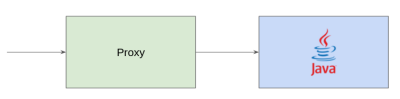

Way to cache your data
- Embedded cache
- Client server
- Distributed cache
- Revers proxy
Embedded cache
-
Java ConcurrentHashMap is not the best way to cache data. It is not complete main targets.
Remember that Spring Cache use this implementation by default.
-
Guava / Caffeine / Ehcache is good choice when your
application deployed in single
instance mod (no shared
state). It is contains main cache features like:
- automatic loading of entries into the cache, optionally asynchronously
- size-based eviction when a maximum is exceeded based on frequency and recency
- time-based expiration of entries, measured since last access or last write
- asynchronously refresh when the first stale request for an entry occurs
- keys automatically wrapped in weak references
- values automatically wrapped in weak or soft references
- notification of evicted (or otherwise removed) entries
- writes propagated to an external resource
- accumulation of cache access statistics
LoadingCache<Key, Graph> graphs = CacheBuilder.newBuilder()
.maximumSize(1000)
.expireAfterWrite(10, TimeUnit.MINUTES)
.removalListener(MY_LISTENER)
.build(new CacheLoader<Key, Graph>() {
@Override
public Graph load(Key key) throws AnyException {
return createExpensiveGraph(key);
}
});
Client server cache
-
Memcached is simple key/value cache. Memcached's APIs provide a very large hash table
distributed across multiple machines. When the table is full, subsequent inserts cause older data to be
purged in least recently used (LRU) order.
-
Redis is caching platform with transaction and lua scripting support. Main disadvantage is
single worker thread.
-
Ehcache can be started in distributed mod.
- Cloud cache provider (like Amazon ElastiCache)
Distributed cache
-
Hazelcast / Ignite / Tarantool. A distributed cache is a system that pools together the
random-access memory (RAM) of multiple networked computers into a single in-memory data store used as a data
cache to provide fast access to data.
Revers proxy cache

Cache as a Sidecar / Ambassador
We can move cache close to application. We can move cache server to closer to
application, in terms of Kubernetes we can deploy cache and application in same pod.
spec:
containers:
- name: app
image: "app-image:latest"
- name: cache
image: "cache:latest"